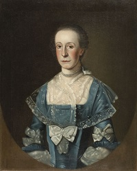

Elizabeth Van Rensselaer Ten Broeck
Elizabeth Van Rensselaer was born in July 1734. She was the only daughter of Rensselaerswyck proprietor Stephen Van Rensselaer and his wife, Elizabeth Groesbeck Van Rensselaer. In 1747, she was identified as an heir in the will filed by her father who died before the end of the year. Her mother lived only until 1756 - leaving twenty-two-year-old Elizabeth to share a substantial estate under the protection of her brother who succeeded their father as patroon.
In November 1763, twenty-nine-year-old Elizabeth married Albany merchant and shipper Abraham Ten Broeck. A portrait by Thomas Mc Ilworth commemorated the marriage. The couple settled into a comfortable home on Market Street where she gave birth to their five children - the last of whom arrived in 1779 when Elizabeth would have been in her mid-forties. She was a pewholder in the Albany Dutch church and a baptism sponsor.
Following the untimely death of her younger brother, Stephen, in 1769, her husband became administrator of the manor - giving her a more lasting connection to her childhood home. During the era of the American Revolution, these Ten Broecks were Market Street mainstays as Abraham emerged as one of Albany's leading figures while continuing to engage and supervise new Van Rensselaer tenants. In 1784, Elizabeth's nephew, Stephen III, became patroon and the Ten Broecks now could concentrate on their Albany-based life as Elizabeth served as the city's first lady and wife of a State senator.
The Ten Broeck riverfront home was destroyed in the Albany fire of 1797. The following year, Abraham built a grand mansion on a vista called Arbor Hill just north of the Albany city line.
Abraham Ten Broeck filed a will in March 1809. It named his "beloved wife" as his first beneficiary and executor of his estate. He died in January 1810. Elizabeth lived on Arbor Hill until her death in July 1813 - a few days shy of her seventy-ninth birthday. Then the estate devolved on her three surviving children.
Portrait by Mc Ilworth in the collection of the Albany Institute of History and Art.